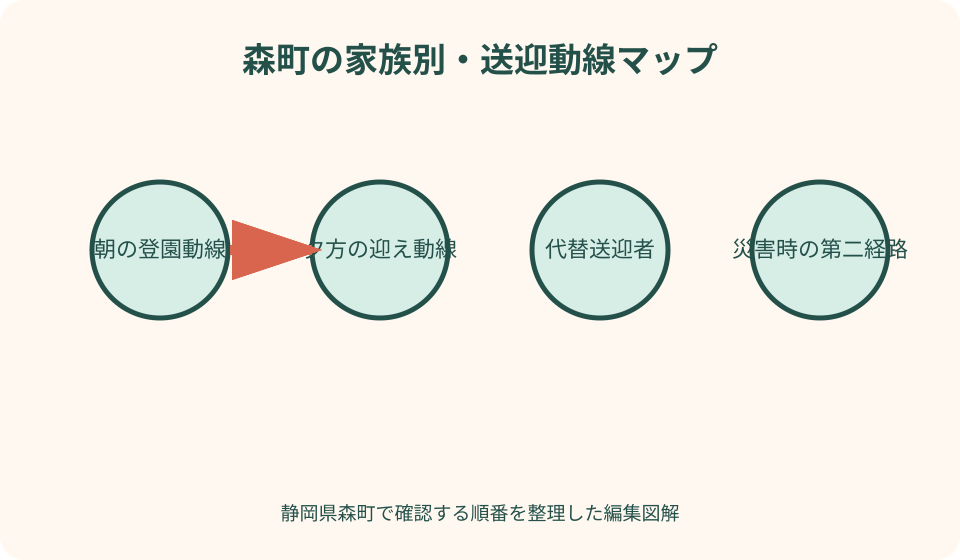
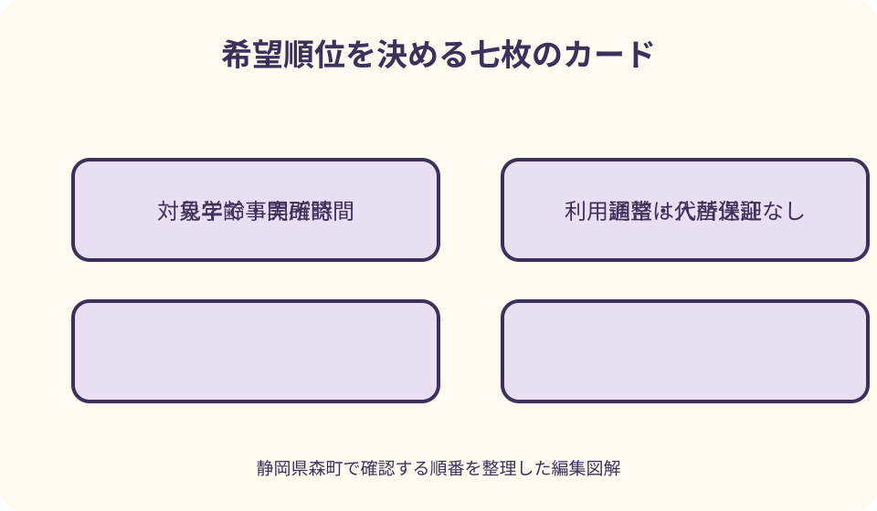

妊娠・子育て手続｜最終確認 2026-08-10
静岡県森町の保育園希望順位｜送迎・通勤・災害時まで比較する方法
希望順位は、人気や口コミで園を上から並べるランキングではありません。森町には施設種別、対象年齢、開所時間、場所が異なる保育所等があり、毎日の送迎者、勤務先への道、きょうだいの登園・通学、災害時の迎え、子どもに必要な配慮によって、家庭に合う順は変わります。申込書に書く前に、利用できる条件と暮らしの持続性を一施設ずつ確認します。

編集イラスト静岡県森町の希望園をランキングにしない
最初の結論は、園を一般的な優劣で並べないことです。保育内容が魅力的でも、送迎が勤務に間に合わない、きょうだいの学校と逆方向、災害時に迎えへ行けないなら、家庭が継続して利用する難しさがあります。
希望順位は『その家庭が利用決定後に毎日続けられる順』です。子どもの年齢、必要な配慮、通常の送迎者、代替送迎者、勤務日、開所時間、費用、災害時を一枚へ並べます。
森町公式の『保育所等について』は、施設名、所在地、定員、対象年齢、保育時間を一覧にしています。対象年度の入所案内と申込書を合わせて読み、候補を作ります。
この記事の確認日は2026年8月10日です。施設種別、定員、開所時間、募集内容は変わり得ます。実際の申込みでは、森町公式、各施設の最新案内、見学時の回答を優先してください。
申込書の希望欄と希望理由
森町の令和8年度申込書には、第1希望から第3希望までの施設名と、それぞれの希望理由を書く欄があります。希望施設の記載がない場合は利用調整を行わないという注意もあるため、空欄の扱いを確認します。
希望理由は、『評判がよい』『人気がある』ではなく、父の通勤経路上、祖父母が緊急迎え可能、きょうだいと同方向、対象年齢が就学前までなど、家庭の事実に基づいて書きます。
第2・第3希望は、第一希望へ入れなかったときだけ仕方なく通う園ではありません。決定したら実際に利用できる施設だけを書き、送迎が成立しない園を枠数のために追加しないようにします。
希望数を増やすことと入所可能性の関係は、家庭の推測で決められません。どこまで希望を書けるか、特定園だけを希望する場合の取扱いは健康こども課幼稚園保育園係へ確認します。
森町の保育施設を種別で分ける
森町公式では、認定こども園、認可保育所、小規模保育事業所が案内されています。施設種別によって対象年齢や卒園後の接続が異なるため、園名だけで比較せず種別を最初の列に置きます。
認可保育所と認定こども園の保育園部は、0歳から就学前までの対象が示されています。認定こども園は教育認定と保育認定で申込経路が異なる場合があるため、希望する部門を明確にします。
小規模保育事業所は原則0歳から2歳までと森町公式に掲載されています。現在の通いやすさだけでなく、3歳以降の進級・連携・新たな申込みについて見学と町相談で確認します。
施設の定員は全体の規模を知る情報ですが、申込時点の年齢別空き数とは同じではありません。定員が大きいから入りやすい、小さいから入りにくいという順位にはしません。
子どもの年齢と利用期間を確認する
候補表には、申込年度4月1日時点の年齢、希望入所月の月齢、卒園まで利用できる見込みの年数を書きます。年度途中に誕生日を迎える場合も、クラス年齢を施設へ確認します。
0歳児は、施設ごとの受入開始月齢、慣らし保育、授乳・離乳食の対応を聞きます。『0歳から』という一覧表示だけで、生後すぐ受け入れると判断しません。
2歳児が小規模保育を希望する場合は、翌年度以降の見通しを確認します。連携施設があるか、卒園後の利用先が自動で確保されるかを曖昧にせず、町と施設へ尋ねます。
きょうだいで年齢が離れている家庭は、同じ施設が両方の対象になる期間を計算します。一年だけ同園でも翌年に再び別方向の送迎となる可能性を、順位へ反映します。
通常の送迎者を決める
通常送迎者を『家族』とだけ書かず、曜日と朝夕で具体的に決めます。月曜朝は父、平日夕方は母、金曜夕方は祖母など、勤務シフトと合わせて候補園ごとの実行可能性を見ます。
送迎者の出発地も重要です。自宅から園、園から勤務先という朝の動線と、勤務先から園、園から自宅という夕方の動線を別々に測ります。
自動車送迎では、駐車場所、混雑時の待ち、玄関までの移動、きょうだいを降ろす時間を含めます。地図アプリの走行時間だけで到着時刻を決めません。
徒歩・自転車送迎では、雨天、暗い時間、荷物、子どもの成長、下の子の同伴を考えます。普段は可能でも台風や猛暑時に代替できるかを確認します。
代替送迎者と緊急迎え
子どもの発熱、保護者の出張、車の故障などに備え、第二の送迎者を決めます。祖父母や知人へ頼む場合は、本人の同意、運転可否、チャイルドシート、施設の引渡登録を確認します。
施設が登録者以外へ子どもを引き渡すときの手順、当日の連絡、本人確認書類を見学時に聞きます。家族から電話すれば誰でも迎えられるとは限りません。
代替者の自宅から各園までの時間も実測します。通常送迎者に便利な園が、緊急迎え担当には山越えや遠回りになることがあります。
家族全員が同時に動けない場合の第三案として、勤務先の早退制度や近隣支援を確認します。ただし利用登録や対象条件のあるサービスを確定済みの迎え手段として数えません。
通勤動線を朝夕で実測する
通勤動線は、平日朝の登園時間帯と夕方の迎え時間帯に走ります。休日昼間の所要時間では、通学、工事、渋滞、施設入口の混雑を反映できません。
森町内でも、森・飯田・園田・向天方・北部から主要道路への出方が異なります。勤務先が袋井、磐田、掛川、浜松方面なら、園を経由した後の方向転換や踏切も確認します。
送迎後に始業へ間に合うかは、園の開所時刻だけでなく、受け渡し、荷物収納、連絡事項に必要な時間を含めます。毎日ぎりぎりになる候補は、家庭の継続性として低く評価します。
帰路は、残業、買い物、きょうだいの習い事を含む複数パターンを作ります。最短経路だけで順位を決めず、一部道路が通れないときの代替路も確認します。
開所時間と認定時間を混ぜない
森町公式の一覧では、施設により7時開始、7時30分開始、18時または18時30分終了、延長19時までなど違いがあります。掲載時点の情報なので、見学予約時に最新時刻を確認します。
施設の開所時間は建物が利用できる可能性のある時間で、家庭の認定された保育時間と同じではありません。保育標準時間・短時間、延長扱いとなる時刻を町と施設へ確認します。
勤務開始が早い場合、開所直後に毎日受け入れ可能か、早朝利用の申込み、料金、持ち物を尋ねます。施設一覧の開始時刻だけで追加手続き不要と判断しません。
夕方も、通常保育終了、延長開始、最終退園を分けます。電車遅延や道路渋滞があった日の連絡方法と、恒常的に延長を使う場合の申込みを確認します。
きょうだいの園・学校との動線
きょうだいが別の園や学校へ通う家庭は、一人ずつの最短園ではなく、朝に全員を送った合計時間を比べます。始業・登校時刻、駐車、連絡帳提出を含めます。
同じ園を希望する利点は送迎集約ですが、年齢別の受入枠が同時にあるとは限りません。きょうだいが在園していることが利用調整でどう扱われるかは町の基準を確認します。
別園になった場合の順番を二通り試し、遅刻しにくい方を決めます。夕方は閉所が早い施設を先に迎えるなど、朝とは逆順になる可能性があります。
小学生の下校、放課後児童クラブ、習い事がある家庭は、乳幼児の迎えと重なる時刻をカレンダーへ置きます。きょうだいの予定が曜日で変わるなら、候補園の順位も曜日別に検証します。
見学前に公式情報で候補を絞る
見学前には、森町公式とこども家庭庁の『ここdeサーチ』で、所在地、施設種別、対象年齢、定員、保育時間、教育・保育内容、実費徴収などを確認します。
ウェブ情報は候補を作る材料であり、最新の受入状況や日々の運用を保証するものではありません。更新日を記録し、見学時に変わった点を聞きます。
候補を多くしすぎると見学が比較作業だけになります。まず対象年齢と送迎可能時間で利用できない施設を外し、残った園を同じ質問票で見ます。
口コミは、質問を作る手掛かりに留めます。匿名の一件から園全体を評価せず、気になる点を『実際の連絡方法は』『見学時に確認できるか』という質問へ変換します。

見学で子どもの一日を追う
見学は建物の新しさを見るだけでなく、登園、荷物、遊び、食事、昼寝、排せつ、降園という一日の流れを聞きます。保護者が毎日用意する物も確認します。
子どもが安心できるかは短時間の見学だけで断定できません。職員の説明、子どもへの声かけ、保護者との連絡、困ったときの相談方法を具体的な例で尋ねます。
アレルギー、服薬、発達、医療的配慮がある場合は、入所後に伝えればよいと待たず、見学前または申込前に町と施設へ相談します。受入可否を記事や口コミから決めません。
見学後は、その場の印象を『良い・悪い』だけで書かず、確認できた事実、未確認、家庭との相性、追加質問へ分けます。同じ日に複数園を見るなら、質問順をそろえます。
持ち物・食事・費用を比較する
毎日の持ち物は、着替え、寝具、おむつ、食事用品、連絡方法など施設で異なる場合があります。準備時間、洗濯、持ち帰り頻度を家族の負担として比較します。
給食は、提供開始年齢、離乳食、アレルギー対応、弁当日、主食費・副食費を確認します。対応があるという一言だけで、個別の除去や代替が可能と決めません。
保育料が無償化対象でも、給食費、教材費、用品費、行事費、延長保育料などは残る可能性があります。初期費用と毎月費用を分けて施設へ聞きます。
送迎負担が小さくても、家庭の予算や準備時間と合わない場合があります。金額だけで園を低く評価せず、何に必要な費用か、任意か必須か、支払時期を理解します。
災害時の引き取りを希望順位へ入れる
森町は、土砂災害危険箇所、河川氾濫区域、避難所などを防災ハザードマップで確認するよう案内しています。自宅だけでなく候補園、勤務先、送迎路を同じ地図で見ます。
園がどの災害でどこへ避難するか、保護者への連絡手段、引き取り条件、訓練を見学時に聞きます。町指定避難所と園の一時避難先が同じとは限りません。
通常送迎者が町外勤務の場合、道路や鉄道が止まったときの代替迎え担当を決めます。祖父母宅から園までの経路も、土砂・浸水・橋の影響を地図で確認します。
災害リスクの色だけで園を順位付けせず、建物の対策、避難計画、連絡、代替経路、家族の到達可能性を合わせます。危険度の最終判断は町・県の最新情報と施設説明へ戻します。
大雨・地震の日の送迎シミュレーション
大雨時は、普段の最短路が河川沿いや斜面近くを通るか確認します。通行規制が出てから代替路を探すのではなく、第二経路と迎え担当を平時に決めます。
地震時は、自動車が使えない、通信が混雑する、勤務先から戻れない場面を想定します。園の引き渡しルールと家族の集合方針を合わせ、迎え担当が重複しないようにします。
停電時は電子連絡アプリだけに頼らず、園が使う電話、メール、掲示、町の情報配信を確認します。森町ちゃっとメールなど町の防災情報も家族で登録先を分担します。
訓練では、実際に歩ける距離か、夜間や雨天でも分かる道かを確かめます。子どもを連れた帰路は大人だけの時間より長くなるため、余裕を持たせます。
希望順位を家族点数だけで決めない
比較表に点数を付けると整理しやすい一方、合計点だけで自動的に順位を決めると重要条件が埋もれます。『対象年齢外』『閉所に間に合わない』などの必須条件は点数ではなく除外条件にします。
重みは家庭ごとに決めます。送迎時間を最優先する家庭、医療的配慮を重視する家庭、きょうだい同園を重視する家庭で順位が違うのは自然です。
保護者間で点数が異なる場合は、平均する前に理由を聞きます。朝担当と夕方担当では見えている負担が異なるため、双方の一週間を表へ反映します。
子どもの様子も参考にしますが、一回の見学で泣いた・楽しそうだっただけを決定要因にしません。環境の違い、時間帯、体調を考え、職員の説明と合わせます。
利用調整を理解する
森町は、申込者が多い場合、保護者の就労や家庭状況、きょうだいの入園状況などを総合し、基準に沿って利用調整すると案内しています。希望順位だけで決まる仕組みではありません。
こども家庭庁も、市町村が保育の必要性などから優先順位を付け、利用施設を調整すると説明しています。見学で好印象だったことや園との会話が入所内定を意味しません。
第一希望以外へ内定した場合、利用するか、辞退するか、次回調整を待てるかを家族で事前に話します。辞退の影響や申込み継続は町へ確認します。
どこにも決まらなかった場合は、希望変更、追加申込み、勤務調整、一時的サービスを検討します。申込書を出したから結果まで何も更新しなくてよいとは限りません。
希望順位を整理する良い点
良い点は、入所後の毎日を具体的に想像できることです。園の説明だけでなく、送迎時間、勤務、きょうだい、緊急迎えを並べると、家庭が無理なく続けられる候補が見えます。
同じ質問票で見学すれば、印象の強さではなく確認事実を比較できます。後から新しい情報が出ても、該当欄だけを更新して順位を見直せます。
災害時を含めることで、晴れた平日の便利さだけに偏りません。代替路、連絡、引き取り担当を決める作業は、入所先にかかわらず家族の防災準備になります。
希望理由を言葉にすると、申込書を家族の合意記録として使えます。決定が第一希望でなくても、どの条件を再確認すべきかが分かります。
森町の情報へ注文したい点
注文したい点は、施設一覧に、年齢別受入、延長の申込、駐車、卒園後の接続、見学方法を横並びで掲載すると比較しやすいことです。更新日も項目ごとに分かると安心です。
申込書の希望理由について、送迎、きょうだい、勤務動線などの記入例があると、人気や評判ではなく家庭事情を書きやすくなります。評価にどう使うかの説明も必要です。
利用調整後に第一希望以外へ内定した場合の回答期限、辞退、次回調整の流れを図示すると、家族が結果後の行動を準備できます。個別結果を保証しない注意も添えられます。
防災面では、各施設の避難先と引き取り方針への公式リンクが施設一覧から開けると、住まい・勤務先との経路を比較しやすくなります。
第一希望が決まらないときの代案・結論
代案・結論として、第一希望へ入れない場合に実際に利用できる園だけを第二・第三希望へ書きます。通えない園を数合わせで入れると、内定後に辞退や再調整が必要になります。
第二希望が遠い場合は、送迎者変更、勤務時間、延長保育、きょうだいの支援を事前に会社と家族へ相談します。実現可能になってから希望へ加えます。
候補が一園しかない家庭は、その理由と入所できない場合の仕事・保育の代替を準備します。希望数を増やせないことを責めず、町へ利用調整後の選択肢を確認します。
最終的な順位は、対象年齢、開所時間、通常送迎、代替送迎、見学、災害時という必須条件を満たしたうえで、家族が継続できる順に決めます。入所保証や園の社会的評価ではありません。
図解案1：森町の家族別・送迎動線マップ
一つ目の図解は、森町の候補施設、自宅、父母の勤務先、祖父母宅、きょうだいの学校を線で結びます。朝、夕、緊急時を三色に分け、同じ園でも経路が変わることを示します。
各施設の横には、開所時間、対象年齢、延長の確認欄を置きます。道路距離だけでなく、受け渡しを含む実測分数を記入できる形にします。
ハザードマップの土砂・浸水想定は薄い層で重ね、通常路が使えない場合の第二経路を点線にします。危険を断定せず、町情報と施設説明を確認する印を付けます。
森町の山間部と町なかを一枚に描き、勤務先方面への出口も示します。園ランキングではなく、一家族の生活動線を可視化する固有図にします。

図解案2：希望順位を決める七枚のカード
二つ目は、候補園ごとに『年齢』『開所時間』『通常送迎』『代替迎え』『きょうだい』『見学』『災害時』の七枚を重ねるカード図です。
必須条件を満たさないカードには点数を付けず、候補から外す理由を記録します。満たす園だけを、家庭が重視する順に比較します。
見学カードは、確認事実、未確認、子どもの様子、追加質問の四欄にします。口コミや一時的な印象を事実欄へ混ぜません。
カード下部に第1〜第3希望と希望理由を置き、その先を利用調整へつなぎます。どのカードも内定札ではないことを図中で明確にします。
大石の視点：園ではなく暮らしを順位付けする
大石の視点では、順位付けの対象は園の価値ではなく、家族の生活案です。同じ施設でも、自宅や勤務先、送迎者が違えば使いやすさは変わります。
住まいを選ぶ前なら、第一希望園へ近いだけで物件を決めず、第二・第三希望、学校、買い物、災害時の経路も確認します。利用調整結果が変わっても暮らせる位置が安心です。
森町では自動車が便利な場面が多い一方、家族全員が車を使えるとは限りません。故障、免許返納、勤務中の車利用を想定し、徒歩や代替者の経路も見ます。
希望順位は一度決めて終わりではありません。勤務、住所、きょうだい、子どもの状態が変わったら町へ連絡し、申込内容の変更と家庭表の更新を行います。
家族会議で使う比較表
比較表の列は候補園、行は施設種別、対象年齢、開所、延長、朝送迎、夕送迎、代替迎え、きょうだい、費用、見学、防災にします。
回答には出典と日付を付けます。森町公式、施設ウェブ、見学回答、家族実測を区別し、古い情報を最新回答のように使いません。
保護者は各自で表を埋めてから話します。送迎担当でない人が便利と判断した園について、実際の担当者が負担を説明できるようにします。
合意できない項目は多数決にせず、再見学、通勤実測、町への質問へ戻します。締切前に決める日を設定し、未確認のまま申込書へ書かないようにします。
一次情報を確認する順番
最初に森町の施設一覧で、施設種別、住所、対象年齢、定員、保育時間を確認します。次に対象年度入所案内と申込書で希望欄、締切、利用調整を見ます。
施設の詳細は、公式ウェブと見学で確認します。こども家庭庁の『ここdeサーチ』も、住所、教育・保育内容、利用定員、実費を調べる補助に使えます。
防災は森町のハザードマップ、指定避難所、施設の避難計画を分けて確認します。地図の色だけで避難先や休園判断を決めません。
国の新制度ページでは、認定、申込み、利用調整、契約の順を確認します。森町固有の希望記入や結果時期は町公式を優先します。
森町と施設への質問例
森町の窓口は健康こども課幼稚園保育園係で、公式ページの電話番号は0538-86-6300です。『希望順位と利用調整、希望数、申込後の変更方法を確認したい』と質問をまとめます。
施設へは、『○歳児で○月入所を検討しています。通常保育と延長の時刻、朝夕の受け渡し、見学可能日を教えてください』と、年齢と希望月を伝えます。
きょうだいがいる場合は、『上の子の学校送迎と重なります。登園可能時間、玄関までの所要、緊急時に祖父母が迎える登録方法を確認したい』と聞きます。
防災では、『地震・大雨時の避難先、保護者への連絡、引き取り登録者、道路が使えない場合の対応を教えてください』と、通常の送迎質問から分けます。
まとめ：家庭が続けられる順を選ぶ
森町の希望園順位は、対象年齢と開所時間という利用条件を確認し、通常送迎、代替迎え、通勤、きょうだい、見学、災害時を重ねて決めます。
第1〜第3希望は、どこへ決まっても実際に利用できる施設だけを書きます。希望理由は人気ではなく、家庭の動線と子どもの必要性から説明します。
申込みが多い場合は利用調整があり、第一希望やいずれかの施設への入所が保証されません。施設の空きに関する口頭回答や見学も内定ではありません。
今日の一歩は、候補園、自宅、勤務先、代替送迎者宅を地図へ置き、平日朝夕に一度走ることです。その結果と見学回答を比較表へ戻し、家族が継続できる順位を作ってください。
公式情報・確認先
掲載内容は次の一次情報を基礎に整理しました。営業、料金、催し、交通は変わるため、出発前または手続き前にリンク先で最新情報を確認してください。
- 保育所等について（静岡県森町、2026-08-10確認）
- 令和8年度 保育所等入所の申込みについて（静岡県森町、2026-08-10確認）
- 令和8年度 教育・保育給付認定申請書兼入所申込書（静岡県森町、2026-08-10確認）
- 災害に備えて（静岡県森町、2026-08-10確認）
- 防災情報（静岡県森町、2026-08-10確認）
- ここdeサーチについて（こども家庭庁、2026-08-10確認）
- よくわかる子ども・子育て支援新制度（こども家庭庁、2026-08-10確認）